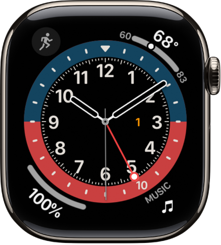

此表盘有两个刻度盘：显示当地时间的 12 小时内侧刻度盘，以及可让你追踪第二个时区的 24 小时外侧刻度盘。
下方的文件数包括本地化资源。固件名称键能确认包的归属；组件的圆屏点击边界、亮屏过渡与 AOD 对照均待设备验证。
原始包 已解析属性表 Mach-O 方法与成员 ARM64 汇编 解出的图集
.strings × 132 .stringsdict × 44 .plist × 2 .car × 1 无扩展名 × 1
原始包 已解析属性表 Mach-O 方法与成员 ARM64 汇编 解出的图集
.strings × 132 .stringsdict × 44 .plist × 2 .car × 1 无扩展名 × 1
原始包 已解析属性表 Mach-O 方法与成员 ARM64 汇编 解出的图集
.strings × 132 .stringsdict × 44 .plist × 2 .car × 1 无扩展名 × 1
NTKAlaskanFaceBundle.bundle共用此包的条目有 计时码表专业、正计时、GMT。下方资源按包列出，具体款式需结合名称键和调用路径。
FACE_STYLE_SHARK_DESCRIPTIONFACE_STYLE_SALMON_DESCRIPTIONFACE_STYLE_TROUT_DESCRIPTIONEDIT_OPTION_LABEL_SHARK_TIME_SCALE_TACHYMETEREDIT_OPTION_LABEL_SHARK_TIME_SCALE_60EDIT_MODE_LABEL_SHARK_TIMESCALEEDIT_OPTION_LABEL_SHARK_TIME_SCALE_30EDIT_OPTION_LABEL_SHARK_TIME_SCALE_6EDIT_OPTION_LABEL_SHARK_TIME_SCALE_3色组与设备条件 AlaskanColors.color.plist 共享色组与默认值
-[NTKAlaskanContentController handleWillTransitionToTritiumOn];-[NTKAlaskanContentController prepareForTransitionToTritiumOnAnimated:withCompletion:];-[NTKAlaskanContentController handleWillTransitionToTritiumOff];-[NTKAlaskanContentController handleDidTransitionToTritiumOff];-[NTKAlaskanContentController handleDidTransitionToTritiumOn];-[NTKAlaskanContentView applyTransitionTritiumOnWithFraction:];-[NTKAlaskanChronographStyleController handleWillTransitionToTritiumOn];-[NTKAlaskanChronographStyleController prepareForTransitionToTritiumOnAnimated:withCompletion:];-[NTKAlaskanChronographStyleController handleWillTransitionToTritiumOff];-[NTKAlaskanChronographStyleController handleDidTransitionToTritiumOff];-[NTKAlaskanChronographStyleController handleDidTransitionToTritiumOn];-[NTKAlaskanChronographView setTritiumFraction:];-[NTKAlaskanChronographView applyTransitionTritiumOnWithFraction:];-[NTKAlaskanChronographView handleAlwaysOnTapToWakeAtPoint:];-[NTKAlaskanChronographView tritiumFraction];-[NTKAlaskanChronographView tritium_transitionToTritiumOnWithProgress:];-[NTKAlaskanChronographView tritium_alwaysOnTimelines];-[NTKAlaskanChronographView tritium_transitionToFrameSpecifier:];-[NTKAlaskanChronographView tritium_transitionToTritiumOffWithProgress:];-[NTKAlaskanChronographView tritium_willTransitionToTritiumOffFromFrameSpecifier:];-[NTKAlaskanDiverStyleController handleWillTransitionToTritiumOn];-[NTKAlaskanDiverStyleController prepareForTransitionToTritiumOnAnimated:withCompletion:];-[NTKAlaskanDiverStyleController handleWillTransitionToTritiumOff];-[NTKAlaskanDiverStyleView tritium_didTransitionToTritiumOn];-[NTKAlaskanDiverStyleView applyTransitionTritiumOnWithFraction:];-[NTKAlaskanDiverStyleView tritium_transitionToTritiumOnWithProgress:];-[NTKAlaskanDiverStyleView tritium_alwaysOnTimelines];-[NTKAlaskanDiverStyleView tritium_transitionToFrameSpecifier:];-[NTKAlaskanDiverStyleView tritium_transitionToTritiumOffWithProgress:];-[NTKAlaskanDiverStyleView tritium_willTransitionToTritiumOffFromFrameSpecifier:];-[NTKAlaskanGMTStyleController tritiumAnimationInProgress];-[NTKAlaskanGMTStyleController prepareForTransitionToTritiumOnAnimated:withCompletion:];-[NTKAlaskanGMTStyleController setTritiumAnimationInProgress:];-[NTKAlaskanGMTStyleView applyTransitionTritiumOnWithFraction:];-[NTKAlaskanChronographViewDelegate alaskanChronographViewDidExitChronometerMode:completionBlock:animated:];-[NTKAlaskanContentController setOverrideDate:duration:];-[NTKAlaskanContentController handleWillTransitionToTritiumOn];-[NTKAlaskanContentController prepareForTransitionToTritiumOnAnimated:withCompletion:];-[NTKAlaskanContentController handleWillTransitionToTritiumOff];-[NTKAlaskanContentController handleTransitionToFrameSpecifier:];-[NTKAlaskanContentController handleDidTransitionToTritiumOff];-[NTKAlaskanContentController handleDidTransitionToTritiumOn];-[NTKAlaskanContentView applyTransitionTritiumOnWithFraction:];-[NTKAlaskanDiverStyleViewDelegate alaskanDiverStyleView:didRotateDialToMinuteOffset:];-[NTKAlaskanDiverStyleViewDelegate alaskanDiverStyleViewDidCancelPreCountUpWithCompletionBlock:animated:];-[NTKAlaskanDiversColorPalette cornerComplicationSecondary];-[NTKAlaskanDiversColorPalette secondHand];-[NTKAlaskanDiversColorPalette activeDialTicks];-[NTKAlaskanDiversColorPalette setCornerComplicationSecondary:];-[NTKAlaskanDiversColorPalette dialTicks];-[NTKAlaskanDiversColorPalette setActiveDialTicks:];-[NTKAlaskanDiversColorPalette setDialTicks:];-[NTKAlaskanDiversColorPalette setSecondHand:];-[NTKAlaskanGMTColorPalette setSecondHandColor:];-[NTKAlaskanGMTColorPalette secondHandColor];-[NTKAlaskanGMTColorPalette setTicksDialColor:];-[NTKAlaskanGMTColorPalette ticksDialColor];-[NTKAlaskanGMTStyleViewDelegate alaskanGMTStyleViewDidCancelEditing:animated:];-[NTKAlaskanStopwatch elapsedLapDurationForFutureTime:];-[NTKAlaskanStopwatch elapsedDurationForFutureTime:];-[NTKAlaskanChronoDialView setTicksView:];-[NTKAlaskanChronoDialView ticksView];-[NTKAlaskanChronoDialView secondaryMarkersView];-[NTKAlaskanChronoDialView setSecondaryMarkersView:];-[NTKAlaskanChronoDialViewOptions hasSecondaryMarkers];-[NTKAlaskanChronoDialViewOptions largeTickSize];-[NTKAlaskanChronoDialViewOptions largeTicksAnchorPoint];-[NTKAlaskanChronoDialViewOptions largerTicksTestBlock];-[NTKAlaskanChronoDialViewOptions secondaryMarkerTextBlock];-[NTKAlaskanChronoDialViewOptions secondaryMarkersCount];-[NTKAlaskanChronoDialViewOptions secondaryMarkersDiameter];-[NTKAlaskanChronoDialViewOptions secondaryMarkersFont];-[NTKAlaskanChronoDialViewOptions setHasSecondaryMarkers:];-[NTKAlaskanChronoDialViewOptions setLargeTickSize:];-[NTKAlaskanChronoDialViewOptions setLargeTicksAnchorPoint:];-[NTKAlaskanChronoDialViewOptions setLargerTicksTestBlock:];-[NTKAlaskanChronoDialViewOptions setSecondaryMarkerTextBlock:];-[NTKAlaskanChronoDialViewOptions setSecondaryMarkersCount:];-[NTKAlaskanChronoDialViewOptions setSecondaryMarkersDiameter:];-[NTKAlaskanChronoDialViewOptions setSecondaryMarkersFont:];-[NTKAlaskanChronoDialViewOptions setSmallTickSize:];-[NTKAlaskanChronoDialViewOptions setSmallTicksAnchorPoint:];-[NTKAlaskanChronoDialViewOptions setTickSizeAtIndexBlock:];-[NTKAlaskanChronoDialViewOptions setTicksAngleProvider:];-[NTKAlaskanChronoDialViewOptions setTicksContentInset:];-[NTKAlaskanChronoDialViewOptions setTicksCount:];-[NTKAlaskanChronoDialViewOptions setVisibleSecondaryMarkersTestBlock:];-[NTKAlaskanChronoDialViewOptions smallTickSize];-[NTKAlaskanChronoDialViewOptions smallTicksAnchorPoint];-[NTKAlaskanChronoDialViewOptions tickSizeAtIndexBlock];-[NTKAlaskanChronoDialViewOptions ticksAngleProvider];-[NTKAlaskanChronoDialViewOptions ticksContentInset];-[NTKAlaskanChronoDialViewOptions ticksCount];-[NTKAlaskanChronoDialViewOptions visibleSecondaryMarkersTestBlock];-[NTKAlaskanChronoSubdialView initWithFrame:ticksView:markersView:];-[NTKAlaskanChronoSubdialView setTickView:];-[NTKAlaskanChronoSubdialView tickView];-[NTKAlaskanChronoSubdialViewOptions largeTickSize];-[NTKAlaskanChronoSubdialViewOptions largerTicksTestBlock];-[NTKAlaskanChronoSubdialViewOptions setLargeTickSize:];-[NTKAlaskanChronoSubdialViewOptions setLargerTicksTestBlock:];-[NTKAlaskanChronoSubdialViewOptions setSmallTickSize:];-[NTKAlaskanChronoSubdialViewOptions setTicksContentInset:];-[NTKAlaskanChronoSubdialViewOptions setTicksCount:];-[NTKAlaskanChronoSubdialViewOptions smallTickSize];-[NTKAlaskanChronoSubdialViewOptions ticksContentInset];-[NTKAlaskanChronoSubdialViewOptions ticksCount];-[NTKAlaskanChronographStyleController scrollAnimation];-[NTKAlaskanChronographStyleController handleWillTransitionToTritiumOn];-[NTKAlaskanChronographStyleController prepareForTransitionToTritiumOnAnimated:withCompletion:];-[NTKAlaskanChronographStyleController setScrollAnimation:];-[NTKAlaskanChronographStyleController handleWillTransitionToTritiumOff];-[NTKAlaskanChronographStyleController setOverrideDate:duration:];-[NTKAlaskanChronographStyleController handleDidTransitionToTritiumOff];-[NTKAlaskanChronographStyleController alaskanChronographViewDidExitChronometerMode:completionBlock:animated:];-[NTKAlaskanChronographStyleController handleDidTransitionToTritiumOn];-[NTKAlaskanChronographStyleController shouldAnimateTimescaleTransition];-[NTKAlaskanChronographView bottomSubdialAnalogHandsFullRotationDuration];-[NTKAlaskanChronographView leftSubdialAnalogHandsFullRotationDuration];-[NTKAlaskanChronographView applyTransitionTritiumOnWithFraction:];-[NTKAlaskanChronographView dialTickView];-[NTKAlaskanChronographView setDialTickView:];-[NTKAlaskanChronographView setTransitionDialTickView:];-[NTKAlaskanChronographView rightSubdialAnalogHandsFullRotationDuration];-[NTKAlaskanChronographView tritium_transitionToTritiumOnWithProgress:];-[NTKAlaskanChronographView rightSubdialHandsAnimationFPS];-[NTKAlaskanChronographView transitionCenterLabel];-[NTKAlaskanChronographView transitionDialTickView];-[NTKAlaskanChronographView removeAllTransitionViews];-[NTKAlaskanChronographView aod1HzTimelineEnabled];-[NTKAlaskanChronographView setIsChronoMode:completionBlock:animated:];-[NTKAlaskanChronographView tritium_alwaysOnTimelines];-[NTKAlaskanChronographView setTransitionLeftSubdialView:];-[NTKAlaskanChronographView stopHandAnimation:];-[NTKAlaskanChronographView tritium_transitionToFrameSpecifier:];-[NTKAlaskanChronographView setupForTimeModeWithCompletionBlock:animated:];-[NTKAlaskanChronographView stopAnimatingBottomSubdialHand];-[NTKAlaskanChronographView secondaryHandView];-[NTKAlaskanChronographView transitionRightSubdialView];-[NTKAlaskanChronographView setTransitionCenterLabel:];-[NTKAlaskanChronographView updateClockHandsPositionAnimated:];-[NTKAlaskanChronographView applyTransitionFromTimeScale:toTimeScale:fraction:];-[NTKAlaskanChronographView setSecondaryHandView:];-[NTKAlaskanChronographView leftSubdialHandsAnimationFPS];-[NTKAlaskanChronographView applyTransitionFromTimeModeToChronometerModeWithfraction:];-[NTKAlaskanChronographView largeHandsAnimationFPS];-[NTKAlaskanChronographView setAod1HzTimelineEnabled:];-[NTKAlaskanChronographView transitionLeftSubdialView];-[NTKAlaskanChronographView setStopwatchModel:animating:];-[NTKAlaskanChronographView tritium_transitionToTritiumOffWithProgress:];-[NTKAlaskanChronographView bottomSubdialHandsAnimationFPS];-[NTKAlaskanChronographView startAnimatingHands];-[NTKAlaskanChronographView cleanUpTimeScaleTransition];-[NTKAlaskanChronographView updateSecondaryHandVisibility];-[NTKAlaskanChronographView largeAnalogHandsFullRotationDuration];-[NTKAlaskanChronographView configureHandsAnimation:currentRadians:durationOfFullRotation:fps:];-[NTKAlaskanChronographView applyTransitionFromView:toView:fraction:];-[NTKAlaskanChronographView startAnimatingBottomSubdialHand];-[NTKAlaskanChronographView secondsAngleForCurrentDate];-[NTKAlaskanChronographView stopAnimatingHands];-[NTKAlaskanChronographView tritium_willTransitionToTritiumOffFromFrameSpecifier:];-[NTKAlaskanChronographView setTransitionRightSubdialView:];-[NTKAlaskanChronographView zRotationForTime:withDuration:];-[NTKAlaskanDialViewFactory _30secondsDialView];-[NTKAlaskanDialViewFactory _3secondsDialView];-[NTKAlaskanDialViewFactory _60secondsDialView];-[NTKAlaskanDialViewFactory _6secondsDialView];-[NTKAlaskanDiverStyleController alaskanDiverStyleView:didRotateDialToMinuteOffset:];-[NTKAlaskanDiverStyleController setAnimationInProgress:];-[NTKAlaskanDiverStyleController _cancelPreCountUpWithCompletionBlock:animated:];-[NTKAlaskanDiverStyleController handleWillTransitionToTritiumOn];-[NTKAlaskanDiverStyleController prepareForTransitionToTritiumOnAnimated:withCompletion:];-[NTKAlaskanDiverStyleController trackSeconds];-[NTKAlaskanDiverStyleController alaskanDiverStyleViewDidCancelPreCountUpWithCompletionBlock:animated:];-[NTKAlaskanDiverStyleController animationInProgress];-[NTKAlaskanDiverStyleController setTrackSeconds:];-[NTKAlaskanDiverStyleController handleWillTransitionToTritiumOff];-[NTKAlaskanDiverStyleController handleExitingEditModeAnimated:];-[NTKAlaskanDiverStyleController rotateToMinuteHand];-[NTKAlaskanDiverStyleController setOverrideDate:duration:];-[NTKAlaskanDiverStyleView trackingTicksView];-[NTKAlaskanDiverStyleView tritium_didTransitionToTritiumOn];-[NTKAlaskanDiverStyleView applyTransitionTritiumOnWithFraction:];-[NTKAlaskanDiverStyleView setHasRotatedToMinuteHand:];-[NTKAlaskanDiverStyleView setTicksView:];-[NTKAlaskanDiverStyleView ticksView];-[NTKAlaskanDiverStyleView scrollAnimation];-[NTKAlaskanDiverStyleView tritium_transitionToTritiumOnWithProgress:];-[NTKAlaskanDiverStyleView aod1HzTimelineEnabled];-[NTKAlaskanDiverStyleView tritium_alwaysOnTimelines];-[NTKAlaskanDiverStyleView setSyncMarkerWithMinuteHand:];-[NTKAlaskanDiverStyleView tritium_transitionToFrameSpecifier:];-[NTKAlaskanDiverStyleView isAnimationInProgress];-[NTKAlaskanDiverStyleView setStartDate:animated:setAngleOffset:];-[NTKAlaskanDiverStyleView setAngleOffset:animated:progressCallback:completionBlock:animationDuration:shouldSetDate:];-[NTKAlaskanDiverStyleView updateTicksForCurrentTime];-[NTKAlaskanDiverStyleView cancelPreCountUpModeWithCompletionBlock:animated:];-[NTKAlaskanDiverStyleView setAod1HzTimelineEnabled:];-[NTKAlaskanDiverStyleView minutesMarkerView];-[NTKAlaskanDiverStyleView setAngleOffset:animated:progressCallback:completionBlock:];-[NTKAlaskanDiverStyleView tritium_transitionToTritiumOffWithProgress:];-[NTKAlaskanDiverStyleView hasRotatedToMinuteHand];-[NTKAlaskanDiverStyleView setScrollAnimation:];-[NTKAlaskanDiverStyleView updateViewStateAnimated:];-[NTKAlaskanDiverStyleView setStartDate:animated:];-[NTKAlaskanDiverStyleView setAngleOffset:animated:progressCallback:completionBlock:animationDuration:];-[NTKAlaskanDiverStyleView syncMarkerWithMinuteHand];-[NTKAlaskanDiverStyleView setMinutesMarkerView:];-[NTKAlaskanDiverStyleView updateTrackingTicks];-[NTKAlaskanDiverStyleView setTrackingTicksView:];-[NTKAlaskanDiverStyleView tritium_willTransitionToTritiumOffFromFrameSpecifier:];-[NTKAlaskanDiversColorPalette _activeDialTicks];-[NTKAlaskanDiversColorPalette _dialTicks];-[NTKAlaskanFOSStudyStopwatchModel elapsedLapDurationForFutureTime:];-[NTKAlaskanFOSStudyStopwatchModel elapsedDurationForFutureTime:];-[NTKAlaskanGMTStyleController tritiumAnimationInProgress];-[NTKAlaskanGMTStyleController alaskanGMTStyleViewDidCancelEditing:animated:];-[NTKAlaskanGMTStyleController prepareForTransitionToTritiumOnAnimated:withCompletion:];-[NTKAlaskanGMTStyleController updateSelectionInViewAnimated:saveSelection:completionBlock:];-[NTKAlaskanGMTStyleController handleExitingEditModeAnimated:];-[NTKAlaskanGMTStyleController setOverrideDate:duration:];-[NTKAlaskanGMTStyleController handleTransitionToFrameSpecifier:];-[NTKAlaskanGMTStyleController setTritiumAnimationInProgress:];-[NTKAlaskanGMTStyleView applyTransitionTritiumOnWithFraction:];-[NTKAlaskanGMTStyleView setTicksView:];-[NTKAlaskanGMTStyleView ticksView];-[NTKAlaskanGMTStyleView scrollAnimation];-[NTKAlaskanGMTStyleView selectHourOffset:animated:completionBlock:];-[NTKAlaskanGMTStyleView selectTimezoneLocation:animated:completionBlock:];-[NTKAlaskanGMTStyleView updatePickerViewSelectionAnimated:];-[NTKAlaskanGMTStyleView updateUIForCurrentStateAnimated:];-[NTKAlaskanGMTStyleView stopEditingAnimated:completionBlock:];-[NTKAlaskanGMTStyleView setEditing:animated:completionBlock:];-[NTKAlaskanGMTStyleView setAngleOffset:animated:progressCallback:completionBlock:];-[NTKAlaskanGMTStyleView createTickMarkerForBezelView];-[NTKAlaskanGMTStyleView setScrollAnimation:];-[NTKAlaskanGMTStyleView _updateDialViewsFrameAnimated:];-[NTKAlaskanGMTStyleView secondaryBackgroundLayer];-[NTKAlaskanGMTStyleView setSecondaryBackgroundLayer:];-[NTKAlaskanGMTStyleView setDiameter:animated:];-[NTKAlaskanPickerView selectItemAtIndex:animated:];-[NTKAlaskanSubdialViewFactory _15MinutesSubdialView];-[NTKAlaskanSubdialViewFactory _2MinutesSubdialView];-[NTKAlaskanSubdialViewFactory _30MinutesSubdialView];-[NTKAlaskanSubdialViewFactory _3MinutesSubdialView];-[NTKAlaskanSubdialViewFactory _60MinutesSubdialView];-[NTKAlaskanSubdialViewFactory _60secondsSubdialView];-[NTKAlaskanContentView setIsEditing:];-[NTKAlaskanContentView isEditing];-[NTKAlaskanDiversColorPalette setMarkers:];-[NTKAlaskanDiversColorPalette markers];-[NTKAlaskanDiversColorPalette clockHandsInlay];-[NTKAlaskanDiversColorPalette clockHands];-[NTKAlaskanDiversColorPalette cornerComplication];-[NTKAlaskanDiversColorPalette cornerComplicationSecondary];-[NTKAlaskanDiversColorPalette secondHand];-[NTKAlaskanDiversColorPalette markerFillColor];-[NTKAlaskanDiversColorPalette activeDialTicks];-[NTKAlaskanDiversColorPalette setActiveStateDateComplication:];-[NTKAlaskanDiversColorPalette setCornerComplicationSecondary:];-[NTKAlaskanDiversColorPalette activeBackground];-[NTKAlaskanDiversColorPalette activeStateDateComplication];-[NTKAlaskanDiversColorPalette countUpClockHands];-[NTKAlaskanDiversColorPalette dateComplication];-[NTKAlaskanDiversColorPalette dialTicks];-[NTKAlaskanDiversColorPalette hourDots];-[NTKAlaskanDiversColorPalette markerOutlineColor];-[NTKAlaskanDiversColorPalette preCountUpClockHands];-[NTKAlaskanDiversColorPalette ring];-[NTKAlaskanDiversColorPalette setActiveBackground:];-[NTKAlaskanDiversColorPalette setActiveDialTicks:];-[NTKAlaskanDiversColorPalette setClockHands:];-[NTKAlaskanDiversColorPalette setClockHandsInlay:];-[NTKAlaskanDiversColorPalette setCornerComplication:];-[NTKAlaskanDiversColorPalette setCountUpClockHands:];-[NTKAlaskanDiversColorPalette setDateComplication:];-[NTKAlaskanDiversColorPalette setDialTicks:];-[NTKAlaskanDiversColorPalette setHourDots:];-[NTKAlaskanDiversColorPalette setMarkerFillColor:];-[NTKAlaskanDiversColorPalette setMarkerOutlineColor:];-[NTKAlaskanDiversColorPalette setPreCountUpClockHands:];-[NTKAlaskanDiversColorPalette setRing:];-[NTKAlaskanDiversColorPalette setSecondHand:];-[NTKAlaskanGMTColorPalette buttonColor];-[NTKAlaskanGMTColorPalette setHourHandInlayColor:];-[NTKAlaskanGMTColorPalette setSecondHandColor:];-[NTKAlaskanGMTColorPalette setButtonColor:];-[NTKAlaskanGMTColorPalette hourHandInlayColor];-[NTKAlaskanGMTColorPalette secondHandColor];-[NTKAlaskanGMTColorPalette buttonIconColor];-[NTKAlaskanGMTColorPalette cityLabelColor];-[NTKAlaskanGMTColorPalette cornerComplicationInnerTextColor];-[NTKAlaskanGMTColorPalette cornerComplicationOuterTextColor];-[NTKAlaskanGMTColorPalette dateComplicationColor];-[NTKAlaskanGMTColorPalette dayDialColor];-[NTKAlaskanGMTColorPalette gmtCurrentHourLabelColor];-[NTKAlaskanGMTColorPalette gmtHandColor];-[NTKAlaskanGMTColorPalette gmtHandInlayColor];-[NTKAlaskanGMTColorPalette hourHandColor];-[NTKAlaskanGMTColorPalette innerMarkersColor];-[NTKAlaskanGMTColorPalette magnifierLensBackgroundColor];-[NTKAlaskanGMTColorPalette magnifierLensBorderColor];-[NTKAlaskanGMTColorPalette magnifierLensLabelColor];-[NTKAlaskanGMTColorPalette monogramTextColor];-[NTKAlaskanGMTColorPalette nightDialColor];-[NTKAlaskanGMTColorPalette outerMarkersColor];-[NTKAlaskanGMTColorPalette setButtonIconColor:];-[NTKAlaskanGMTColorPalette setCityLabelColor:];-[NTKAlaskanGMTColorPalette setCornerComplicationInnerTextColor:];-[NTKAlaskanGMTColorPalette setCornerComplicationOuterTextColor:];-[NTKAlaskanGMTColorPalette setDateComplicationColor:];-[NTKAlaskanGMTColorPalette setDayDialColor:];-[NTKAlaskanGMTColorPalette setGmtCurrentHourLabelColor:];-[NTKAlaskanGMTColorPalette setGmtHandColor:];-[NTKAlaskanGMTColorPalette setGmtHandInlayColor:];-[NTKAlaskanGMTColorPalette setHourHandColor:];-[NTKAlaskanGMTColorPalette setInnerMarkersColor:];-[NTKAlaskanGMTColorPalette setMagnifierLensBackgroundColor:];-[NTKAlaskanGMTColorPalette setMagnifierLensBorderColor:];-[NTKAlaskanGMTColorPalette setMagnifierLensLabelColor:];-[NTKAlaskanGMTColorPalette setMonogramTextColor:];-[NTKAlaskanGMTColorPalette setNightDialColor:];-[NTKAlaskanGMTColorPalette setOuterMarkersColor:];-[NTKAlaskanGMTColorPalette setTicksDialColor:];-[NTKAlaskanGMTColorPalette ticksDialColor];-[NTKAlaskanGMTStyleViewDelegate alaskanGMTStyleViewDidCancelEditing:animated:];-[NTKAlaskanGMTStyleViewDelegate alaskanGMTStyleViewDidFinishEditing:];-[NTKAlaskanGMTStyleViewDelegate alaskanGMTStyleViewDidStartEditing:];-[NTKAlaskanAnalogHand layoutSubviews];-[NTKAlaskanChronoDialView updateWithColorPalette:];-[NTKAlaskanChronoDialView setPalette:];-[NTKAlaskanChronoDialView palette];-[NTKAlaskanChronoDialView initWithFrame:options:palette:];-[NTKAlaskanChronoSubdialView updateWithColorPalette:];-[NTKAlaskanChronoSubdialView setPalette:];-[NTKAlaskanChronoSubdialView layoutSubviews];-[NTKAlaskanChronoSubdialView palette];-[NTKAlaskanChronoSubdialView initWithFrame:options:palette:];-[NTKAlaskanChronographStyleController setIsEditing:];-[NTKAlaskanChronographStyleController cleanupAfterEditing];-[NTKAlaskanChronographStyleController isEditing];-[NTKAlaskanChronographStyleController prepareForEditing];-[NTKAlaskanChronographView applyPalette:];-[NTKAlaskanChronographView setOriginalPalette:];-[NTKAlaskanChronographView setIsEditing:];-[NTKAlaskanChronographView setPalette:];-[NTKAlaskanChronographView layoutSubviews];-[NTKAlaskanChronographView isEditing];-[NTKAlaskanChronographView topLabelPrefixColor];-[NTKAlaskanChronographView topLabelSuffixColor];-[NTKAlaskanChronographView updateCenterLabelColorForTimeMode];-[NTKAlaskanChronographView updateCenterLabelColor];-[NTKAlaskanChronographView originalPalette];-[NTKAlaskanChronographView setTopLabelPrefixColor:];-[NTKAlaskanChronographView updateInnerCircleColor];-[NTKAlaskanChronographView updateCenterLabelColorForChronometerMode];-[NTKAlaskanChronographView updateStartStopButtonColor];-[NTKAlaskanChronographView palette];-[NTKAlaskanChronographView setTopLabelSuffixColor:];+[NTKAlaskanColorEditOption curatedColorLocalizationKeyPrefix];+[NTKAlaskanColorEditOption optionWithColor:forDevice:];+[NTKAlaskanColorEditOption _orderedValuesForDevice:];+[NTKAlaskanColorEditOption curatedColorValuesForDevice:];-[NTKAlaskanColorEditOption pigmentEditOption];-[NTKAlaskanColorEditOption localizedName];-[NTKAlaskanColorEditOption color];-[NTKAlaskanComplicationsConfiguration dateComplicationSlotForDevice:];-[NTKAlaskanComplicationsConfiguration dateComplicationSlotSupportedStylesForDevice:];-[NTKAlaskanComplicationsConfiguration richComplicationSlotsForDevice:];-[NTKAlaskanComplicationsConfiguration init];-[NTKAlaskanComplicationsConfiguration orderedComplicationSlots];-[NTKAlaskanComplicationsConfiguration complicationSlotDescriptors];-[NTKAlaskanDialViewFactory setPalette:];-[NTKAlaskanDialViewFactory palette];-[NTKAlaskanDiverAlertSheetController viewDidLayoutSubviews];-[NTKAlaskanDiverStyleView countUpLabelColor];-[NTKAlaskanDiverStyleView setIsEditing:];-[NTKAlaskanDiverStyleView setPalette:];-[NTKAlaskanDiverStyleView updateColor:object:];-[NTKAlaskanDiverStyleView layoutSubviews];-[NTKAlaskanDiverStyleView isEditing];-[NTKAlaskanDiverStyleView _countUpLabelTextColor];-[NTKAlaskanDiverStyleView palette];-[NTKAlaskanDiverStyleView innerDialViewBackgroundColor];-[NTKAlaskanDiversColorPalette _markers];-[NTKAlaskanDiversColorPalette _activeBackground];-[NTKAlaskanDiversColorPalette _dateComplication];-[NTKAlaskanDiversColorPalette _markerOutlineColor];-[NTKAlaskanDiversColorPalette _activeStateDateComplication];-[NTKAlaskanDiversColorPalette _cornerComplication];-[NTKAlaskanDiversColorPalette init];-[NTKAlaskanDiversColorPalette _activeDialTicks];-[NTKAlaskanDiversColorPalette _dialTicks];-[NTKAlaskanDiversColorPalette _ring];-[NTKAlaskanDiversColorPalette _markerFillColor];-[NTKAlaskanGMTColorPalette _magnifierLensBorderColor];-[NTKAlaskanGMTColorPalette _outerMarkersColor];-[NTKAlaskanGMTColorPalette _dayDialColor];-[NTKAlaskanGMTColorPalette _nightDialColor];-[NTKAlaskanGMTColorPalette _cornerComplicationInnerTextColor];-[NTKAlaskanGMTColorPalette _monogramTextColor];-[NTKAlaskanGMTColorPalette init];-[NTKAlaskanGMTColorPalette _gmtCurrentHourLabelColor];-[NTKAlaskanGMTColorPalette _dateComplicationColor];-[NTKAlaskanGMTStyleController alaskanGMTStyleViewDidCancelEditing:animated:];-[NTKAlaskanGMTStyleController alaskanGMTStyleViewDidFinishEditing:];-[NTKAlaskanGMTStyleController alaskanGMTStyleViewDidStartEditing:];-[NTKAlaskanGMTStyleView setIsEditing:];-[NTKAlaskanGMTStyleView stopEditing];-[NTKAlaskanGMTStyleView startEditing];-[NTKAlaskanGMTStyleView setPalette:];-[NTKAlaskanGMTStyleView updateColor:object:];-[NTKAlaskanGMTStyleView layoutSubviews];-[NTKAlaskanGMTStyleView isEditing];-[NTKAlaskanGMTStyleView setEditingAlpha:];-[NTKAlaskanGMTStyleView stopEditingAnimated:completionBlock:];-[NTKAlaskanGMTStyleView setEditing:animated:completionBlock:];-[NTKAlaskanGMTStyleView palette];-[NTKAlaskanGMTStyleView startEditingWithCompletionBlock:];-[NTKAlaskanPickerCollectionViewCell layoutSubviews];-[NTKAlaskanPickerView layoutSubviews];-[NTKAlaskanPickerView layout];-[NTKAlaskanPickerView setLayout:];-[NTKAlaskanSubdialViewFactory setPalette:];-[NTKAlaskanSubdialViewFactory palette];-[NTKAlaskanSubdialViewFactory _subdialViewWithOptions:palette:tag:];